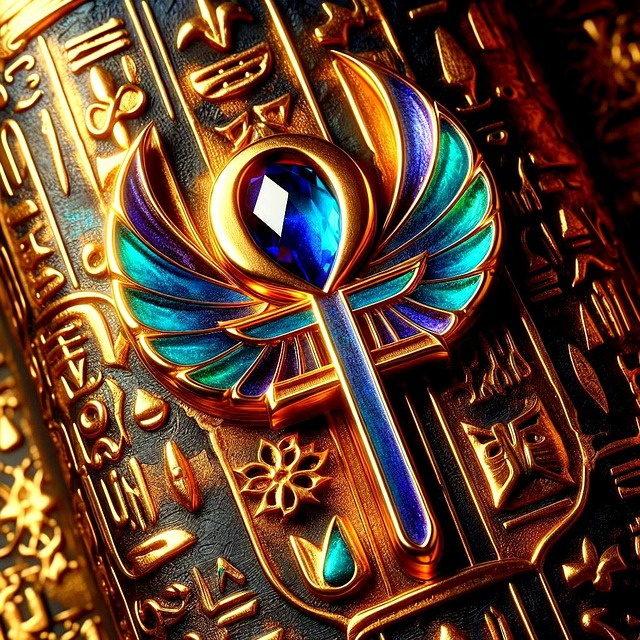

Égypte Éternelle · Dossier Thématique
Plongée dans l'univers intérieur de l'Égypte ancienne — la magie comme science divine, les rituels qui maintiennent l'ordre cosmique, et la géographie mystérieuse du monde des morts
𓂀 Navigation
Héka — La Magie Sacrée
𓎛Héka — La force magique primordialeConcept 𓂋Le pouvoir du Nom et de la ParoleLogomachie 𓀀Les praticiens de la magieActeurs 𓆣Magie quotidienne — protection et guérisonPratique 𓃱La magie offensive et les envoûtementsMagie noireLa Douat — Géographie de l'Au-delà
𓆣La Douat — Anatomie du monde souterrainGéographie 𓇳L'Amdouat — Les douze heures de la nuitTexte royal 𓌀Le Livre des PortesNouvel Empire 𓇾Le Champ des Roseaux — Le ParadisAu-delà 𓁹Le Jugement de l'Âme — La Pesée du cœurEschatologieL'Âme Égyptienne
𓅃Les cinq composantes de l'êtreKa · Ba · Akh 𓅃Le voyage du Ba dans la DouatÂme-oiseau 𓄿L'Akh — L'esprit transfiguréTransfigurationRituels du Temple & Divins
𓊹Le rituel journalier du templeCulte divin 𓀭L'Ouverture de la BoucheRituel funéraire 𓇋Les grandes fêtes rituellesCalendrier sacréRituels Funéraires & Protection
𓀭La momification — rituel completFunéraire 𓎛Formules de protection dans la DouatMagie funéraire 𓆙Les rites contre ApophisApotropaïquePremière partie · La force invisible
La magie n'est pas une illusion en Égypte — c'est la science des forces cosmiques invisibles, aussi réelle que la lumière du soleil.
Héka · Force primordiale
Héka — traduit conventionnellement par « magie » — est l'un des concepts les plus profonds et les plus mal compris de la civilisation égyptienne. Ce n'est pas le tour de passe-passe du prestidigitateur, ni la superstition du primitif : c'est une force cosmique réelle, aussi objective que le vent ou la lumière, qui imprègne l'univers depuis avant la création et que les êtres éduqués peuvent mobiliser, diriger et amplifier.
Dans les Textes des Sarcophages (Formule 261), Héka se décrit lui-même en des termes d'une arrogance cosmique saisissante : « Je suis Héka. J'étais avant le Ciel et la Terre. J'étais avant les dieux. Je suis ce qui précède tout. » Cette antériorité radicale est essentielle : Héka n'est pas un don des dieux aux hommes, c'est la substance même dont les dieux sont faits. Quand Atoum crée l'univers à Héliopolis, c'est par Héka qu'il le fait. Quand Ptah nomme les choses à Memphis, c'est Héka qui donne à la parole son pouvoir de réalisation.
Héka est aussi personnifié en divinité — un dieu mineur de l'entourage solaire, représenté sous forme humaine tenant deux serpents entrelacés (préfiguration du caducée grec). Il monte dans la barque de Rê pour protéger le voyage nocturne, et assiste au jugement des morts dans la Salle des Deux Vérités. Son rôle n'est jamais central mais toujours présent — il est la magie au service de l'ordre cosmique, l'outil invisible que les dieux utilisent à chaque instant.
Toute pratique magique égyptienne repose sur deux axiomes fondamentaux qui structurent la pensée rituelle depuis l'Ancien Empire jusqu'à la période romaine :
Connaître le vrai nom secret d'un être ou d'une force, c'est détenir un pouvoir absolu sur cet être. Le nom (ren) n'est pas une étiquette arbitraire — c'est la nature essentielle de la chose. Prononcer le nom juste dans les circonstances rituelles appropriées, c'est convoquer la réalité désignée. C'est pourquoi les pharaons cachaient leurs noms réels et pourquoi effacer un nom dans un temple était l'acte de destruction le plus radical qu'on pût imaginer.
Agir sur l'image ou la représentation d'une chose, c'est agir sur la chose elle-même. Ce principe — que l'anthropologue James George Frazer appellera plus tard « magie sympathique » — explique toutes les pratiques de figurines ennemies percées d'épingles, de représentations d'animaux venimeux dans les tombes, d'images rituelles brisées et brûlées. Il explique aussi pourquoi représenter le mort en train de festoyer sur la paroi de sa tombe lui garantit réellement de festoyer dans l'au-delà.
Héka, c'est la langue de Ptah, le cœur d'Atoum, le souffle de Chou — la puissance qui fait que les dieux sont des dieux. Les hommes qui le maîtrisent touchent à la substance même du divin.
— Ritner, R.K., The Mechanics of Ancient Egyptian Magical Practice, Chicago, 1993Héka · Logomachie sacrée
Les hiéroglyphes égyptiens ne sont pas une simple écriture phonétique : ils sont des paroles divines (medu netjer), inventées par Thot, chaque signe étant une image vivante portant en elle la nature de la chose représentée. Un hiéroglyphe de serpent dans une tombe est un vrai serpent potentiellement dangereux — c'est pourquoi certains signes représentant des animaux venimeux étaient délibérément mutilés dans les inscriptions funéraires (tête coupée, corps percé) pour les neutraliser avant qu'ils ne s'animent.
Cette conception fait de tout acte d'écriture un acte magique. Graver le nom d'un dieu sur une amulette, c'est convoquer sa présence. Réciter une formule avec la prononciation exacte requise, c'est déclencher une réaction cosmique réelle. Les prêtres portaient des masques de dieux lors des rites non pour se déguiser, mais pour devenir temporairement le dieu qu'ils incarnaient — permettant à la parole divine de résonner avec une puissance authentique.
Le récit d'Isis et du Nom Secret de Rê est la démonstration narrative la plus célèbre de ce principe : Isis fabrique un serpent avec de la terre et la salive de Rê, le pose sur son chemin. Mordu, Rê souffre d'une douleur mystérieuse qu'aucun dieu ne peut soigner. Isis propose de l'aider mais exige en échange son ren secret — le nom véritable qui le constitue dans son essence la plus profonde. Rê cède, lui murmure son nom au creux de l'oreille, et lui transfère ainsi une parcelle de sa puissance cosmique. C'est pourquoi Isis devient la magicienne suprême, plus puissante que tous les autres dieux.
« Je suis Thot, le grand, le seigneur des paroles divines. Que l'ennemi tombe ! Que le mal recule ! Je prononce le nom juste dans l'heure juste — et la force du Nom s'abat sur celui qui me nuit comme la foudre tombe du ciel sans merci. »
Papyrus de Leyde I 343 + 345, époque ramesside, ~1250 av. J.-C.𓂋 Les cinq noms du pharaon
Le protocole royal du pharaon comprend cinq noms officiels, chacun encadré par un titre différent et révélant une facette de sa nature divine. Parmi eux, le nom de Nésout-Bity (« Celui du jonc et de l'abeille ») et le nom de Sa-Rê (« Fils de Rê ») sont inscrits dans des cartouches pour les protéger. Le vrai nom intime du pharaon n'est jamais prononcé en public — seuls les prêtres de rang supérieur y ont accès lors des rites de couronnement et de jubilé.
Héka · Spécialistes du sacré
La magie n'est pas une pratique clandestine ou marginale en Égypte : elle est institutionnalisée, enseignée et exercée par des spécialistes reconnus rattachés aux grands temples. Ces praticiens forment une hiérarchie complexe dont les compétences couvrent à la fois le rituel religieux, la médecine, l'astronomie et l'exorcisme.
| Titre | Traduction | Rôle | Formation |
|---|---|---|---|
| Hery-heb | Porteur du livre rituel | Récite les formules lors des rituels funéraires et des cérémonies temples. Premier officiant de tous les rites majeurs. | Maison de Vie (Per-Ankh) |
| Sau | Celui qui protège (gardien) | Spécialiste des amulettes, des formules de protection personnelle. Consulté pour la naissance, les maladies, les cauchemars. | Apprentissage auprès d'un maître |
| Khery-hebet | Maître des paroles sacrées | Exorciste et guérisseur. Récite les formules médicales-magiques. Lie la médecine physique à l'intervention divine. | Per-Ankh · corpus médicaux |
| Wab-Sekhmet | Prêtre pur de Sekhmet | Médecin-prêtre spécialisé dans les maladies envoyées par Sekhmet. Gère les épidémies et les maladies chroniques. | Temple de Memphis · Sekhmet |
| Imy-is | Celui qui est dans la chambre | Prêtre funéraire assurant l'entretien rituel quotidien des morts dans la tombe — offrandes, récitations. | Famille du défunt · contrat |
Tous ces praticiens sont formés à la Maison de Vie (Per-Ankh), institution rattachée aux grands temples qui conserve les papyrus sacrés, enseigne l'écriture, les rites, la médecine, l'astronomie et la magie. C'est le scriptorium sacré de l'Égypte — l'endroit où les textes magiques sont copiés, transmis et actualisés de génération en génération. Les Grecs l'appelleront plus tard scriptorium sacerdotale et en feront la source légendaire de toute sagesse ésotérique.
𓀀 Le magicien dans les contes — Papyrus Westcar
Le Papyrus Westcar (copie du Moyen Empire d'un original plus ancien) contient plusieurs contes mettant en scène des magiciens royaux réalisant des prodiges. Le sage Djadjaemankh reforme un lac en deux pour retrouver une boucle d'oreille tombée au fond. Djédi, vieillard de 110 ans, peut rattacher une tête coupée sur un corps vivant et connaît le nombre des chambres secrètes du sanctuaire de Thot. Ces récits décrivent un idéal du magicien savant — à la fois technicien du surnaturel et sage philosophe.
Héka · Vie ordinaire
La magie quotidienne est omniprésente dans la vie égyptienne, du palais royal à la chaumière du paysan. Elle n'est ni l'apanage des élites ni l'expression d'une ignorance populaire : c'est une technologie du quotidien accessible à tous, adaptée à chaque situation de la vie humaine — naissance, maladie, voyage, amour, récoltes, protection contre les animaux dangereux.
La naissance est le moment de plus grande vulnérabilité dans la vie d'un Égyptien — pour la mère et pour l'enfant. Des rituels magiques spécifiques entourent chaque accouchement. La déesse Taweret (hippopotame femelle debout) et le dieu nain Bès (à tête de lion grotesque, langue tirée) sont les protecteurs par excellence des naissances : leurs statuettes sont placées dans les chambres des femmes enceintes, leurs images peintes sur les murs. Des formules récitées à voix haute pendant le travail invoquent Isis et Nephtys comme sages-femmes divines — car c'est bien Isis qui accoucha d'Horus dans les marais, seule, en fuite devant Seth. Les baguettes magiques en ivoire d'hippopotame — courbées, couvertes de représentations d'animaux gardiens — étaient posées en cercle protecteur autour du lit de la parturiente.
Le désert, les marécages et les champs d'Égypte grouillent de scorpions et de serpents venimeux. La médecine égyptienne dispose de traitements physiques réels (Papyrus Edwin Smith, Papyrus Ebers), mais chaque traitement physique est doublé d'une formule magique qui l'active. Le principe est explicite dans les papyrus médicaux : la plante ou le minéral soignant est identifié à une substance divine, et la récitation de la formule invoque la puissance du dieu correspondant pour amplifier l'effet pharmacologique. La guérison est à la fois chimique et divine — une séparation que les Égyptiens ne feraient jamais.
Un corpus entier de formules — les textes de Metternich (stèle de Cippi d'Horus) — traitent des morsures et piqûres venimeuses. La stèle de Cippi représente l'enfant Horus debout sur des crocodiles, tenant dans ses mains des serpents, des scorpions et d'autres bêtes maléfiques. Verser de l'eau sur cette stèle, réciter la formule gravée, puis faire boire cette eau au blessé était considéré comme le remède le plus efficace contre les envenimements.
« Recule, tu dont la morsure est la mort ! Recule, toi qui rampes sur ton ventre ! Isis a trouvé le serpent — elle a dit la formule juste — et le venin s'est retiré comme l'eau se retire à la saison sèche. »
Papyrus Ebers, formule de récitation thérapeutique, ~1550 av. J.-C.Héka · Face sombre
Si la magie protectrice et thérapeutique est valorisée, les textes égyptiens témoignent abondamment d'une magie offensive — utilisée pour nuire aux ennemis, capturer l'amour d'une personne, ou maudire des rivaux. La distinction entre magie « blanche » et « noire » n'existe pas comme telle en Égypte : la même force d'Héka peut être orientée dans un sens ou dans l'autre selon l'intention du praticien.
Les Textes d'Exécration sont l'exemple le plus officiel de magie offensive : des listes d'ennemis — princes nubiens, chefs libyens, asiatiques rebelles, mais aussi Égyptiens déloyaux — inscrits sur des figurines en argile ou des bols en céramique, puis rituellement brisés ou enterrés dans des nécropoles. Ces textes, dont les plus importants datent du Moyen Empire (~2000 av. J.-C.), ne sont pas des pratiques clandestines : ils sont commandés par le pharaon lui-même et exécutés par des prêtres officiels. La destruction rituelle de l'image de l'ennemi est une déclaration de guerre cosmique — affaiblir le ba de l'adversaire avant même que les armées s'affrontent.
À un niveau plus intime, les papyrus amoureux et les figurines d'envoûtement documentent une magie populaire intense. La figurine d'envoûtement — petite statuette de cire représentant une personne, parfois percée d'aiguilles, bras liés dans le dos — vise à lier la volonté d'une personne pour la forcer à aimer, obéir ou souffrir. Des procès pour magie malfaisante sont documentés à Deir el-Médineh, et le Procès du Harem sous Ramsès III accuse des comploteurs d'avoir utilisé des formules magiques contre le roi.
𓃱 Les textes d'amour — Papyrus Chester Beatty I
Le Papyrus Chester Beatty I (Nouvel Empire) contient à la fois le conte d'Horus et Seth et des textes d'amour d'une subtilité et d'une sensualité saisissantes — véritables poèmes lyriques. Mais d'autres papyrus moins littéraires contiennent des formules destinées à forcer un amour : « Fais que X ne mange pas, ne boive pas, ne dorme pas, ne rie pas, ne jouisse de rien jusqu'à ce qu'elle vienne à moi. » Cette magie coercitive de l'amour est documentée dans toutes les cultures antiques ; en Égypte, elle est intégrée dans le même corpus que la magie protectrice, sans séparation catégorielle.
« Je connais ce chemin obscur, je connais les gardiens des portes, je connais leur nom secret. Ouvrez-vous, portes du ciel — je passe dans la lumière. »
Deuxième partie · Le monde des morts
Le monde souterrain égyptien n'est pas un enfer — c'est un univers parallèle complexe, dangereux et lumineux, que l'âme doit traverser pour atteindre l'éternité.
La Douat · Géographie mystique
La Douat est l'un des concepts les plus originaux et les plus riches de toute la pensée religieuse mondiale. Ce n'est pas l'enfer du monothéisme occidental (un lieu de punition), ni l'Hadès grec (un séjour gris et fade) — c'est un univers vivant et actif, peuplé de dieux, de morts, de démons et de forces cosmiques, traversé chaque nuit par le soleil en voyage de résurrection.
Contrairement à ce que le mot « souterrain » pourrait suggérer, la Douat n'est pas strictement localisée sous la terre. Les textes la placent alternativement à l'ouest (direction de la mort et du coucher du soleil), dans le ventre de Nout (la déesse céleste), dans les profondeurs du Nil, et dans un espace mystique parallèle à l'univers visible. Cette polysémie géographique est délibérée : la Douat est partout et nulle part, accessible depuis le monde des vivants par des passages rituels spécifiques.
La structure fondamentale de la Douat est celle de douze régions successives correspondant aux douze heures de la nuit — chacune séparée de la suivante par une porte gardée par un serpent ou un dieu à tête d'animal. Chaque heure a son nom propre, ses habitants spécifiques, ses dangers particuliers et ses rituels de passage. Le soleil Rê doit traverser les douze successivement, transformant progressivement son énergie épuisée du coucher en énergie régénérée de l'aurore.
𓆣 Les douze heures de la Douat — D'après l'Amdouat
Entrée dans la Douat. Rê est accueilli par les dieux et les âmes des bienheureux. Région des eaux. Barque solaire reçoit ses passagers nocturnes.
Champs fertiles des morts. Osiris règne sur ses défunts. Les âmes recueillent une récolte éternelle de blé et d'orge divins.
Caverne des sables. Danger des serpents hostiles. Les dieux de la barque récitent les formules de passage. Région de transformations.
La région des morts bienheureux reçoit la lumière de Rê. Les âmes s'éveillent brièvement, s'allongent pour recevoir le souffle divin.
Approche du tombeau d'Osiris. Dieux et déesses gardiens. Formules complexes de passage. Rê commence à sentir son énergie renaître.
MINUIT COSMIQUE — Rê fusionne avec le corps d'Osiris couché. Mort et soleil s'unissent. Maximum de puissance et de vulnérabilité simultanées.
Apophis le grand serpent attaque. Seth brandit sa lance. Combat cosmique entre ordre et chaos. La barque est en danger mortel.
Jugement et punition. Les damnés reçoivent leurs châtiments. Lac de feu. Les ennemis de Rê et d'Osiris sont consumés pour l'éternité.
Approche de la renaissance. Les étoiles circumpolaires tournent. Les dieux tirent la barque vers l'est. L'énergie solaire se régénère activement.
Les eaux de la régénération. Nout attend à l'est pour recevoir son fils. La barque pénètre dans le corps céleste. Renaissance imminente.
Le scarabée Khépri prend la place de Rê vieillard. Transformation finale du coucher en aurore. Les dieux de la nuit saluent l'approche de l'aube.
La barque passe dans le corps du serpent et ressort par la bouche du serpent géant : c'est l'aube. Rê renaît à l'est sous la forme de Khépri. Victoire.
𓆣 La Douat dans les tombes royales
Les parois des tombes royales de la Vallée des Rois ne sont pas décorées au hasard — elles sont une carte de la Douat, orientée selon les heures du voyage solaire. L'axe de la tombe suit la trajectoire de Rê dans le monde souterrain. En pénétrant dans la tombe du pharaon, le visiteur rituel entre dans la Douat. Les textes et images sur les murs servent à la fois de guide au roi défunt pour négocier son voyage et de barrière magique contre les forces hostiles. La tombe est à la fois monument funéraire, texte liturgique et machine cosmique.
La Douat · Eschatologie
Au cœur de la sixième heure de la Douat — au moment du minuit cosmique où Rê fusionne avec le corps d'Osiris — se tient la Salle des Deux Vérités (Maât khrou), le tribunal le plus redoutable de l'univers. C'est ici que chaque âme défunte, après avoir parcouru les premières heures de la Douat, doit prouver qu'elle a vécu selon les principes de Maât — la vérité, la justice et l'ordre cosmique.
L'entrée dans la Salle
Le défunt, guidé par Anubis, pénètre dans la Salle des Deux Vérités. Il est habillé de blanc, pur rituellement. 42 juges assesseurs siègent en deux rangées, chacun responsable d'un péché spécifique. Osiris trône au fond, couronné, tenant le heqa et le nekhakha. Thot se tient prêt avec son calame et son tableau.
La Confession Négative — Chapitre 125
Le défunt s'adresse d'abord aux 42 juges en récitant la Confession Négative — une liste de 42 péchés dont il affirme solennellement s'être abstenu. Chaque affirmation est adressée à un juge nommé : « Ô Destructeur-de-flammes venu d'Héliopolis, je n'ai pas volé. Ô Mangeur d'ombres venu de la caverne, je n'ai pas tué. Ô Porteur de couteau venu d'Abydos, je n'ai pas menti… » Cette liste couvre des péchés moraux (mensonge, meurtre, vol), religieux (profanation des temples, non-respect des offrandes) et sociaux (oppression des faibles, injustice dans les mesures).
La Pesée du Cœur
Anubis place le cœur du défunt (ib) sur le plateau gauche d'une grande balance. Sur le plateau droit, il pose la plume de Maât — la plume d'autruche symbolisant la vérité absolue. Si le cœur est pur, il est aussi léger que la plume et les deux plateaux s'équilibrent parfaitement. Si le cœur est alourdi par des fautes non expiées, le plateau penche.
Le verdict de Thot
Thot, scribe divin, observe scrupuleusement l'équilibre de la balance et note le résultat sur son tableau. Il annonce le verdict à Osiris et à l'assemblée des dieux. Sa parole est définitive et sans appel — lui seul dispose de l'autorité d'inventorier les vérités cosmiques.
L'accueil dans l'éternité
Si le cœur est juste, Horus présente le défunt à Osiris en l'introduisant dans le Champ des Roseaux. Le défunt est déclaré maâ-khérou — « juste de voix » ou « vainqueur de la justice » — et rejoint la communauté des bienheureux. Il peut désormais prendre n'importe quelle forme, voyager librement dans la Douat, et revivre éternellement.
La dévoration par Ammout
Si le cœur est alourdi, la chimère Ammout — corps d'hippopotame, tête de crocodile, arrière-train de lion — surgit et dévore le cœur. Cette seconde mort est la seule véritablement définitive : l'âme qui n'a plus de cœur ne peut être reconstituée, ne peut être ressuscitée. Elle n'existe plus, nulle part, pour l'éternité.
La Pesée du cœur est l'invention la plus originale de la pensée morale de l'Antiquité : un jugement universel, post-mortem, fondé non sur la dévotion mais sur l'éthique. Le critère n'est pas « as-tu prié ? » mais « as-tu été juste ? »
— Assmann, J., Ma'at — Gerechtigkeit und Unsterblichkeit im alten Ägypten, Munich, 1990La Douat · Paradis
Le Champ des Roseaux (Sekhet-Aaru) est le paradis de l'Égypte ancienne — et c'est l'un des paradis les plus concrets et les plus terreà-terre que l'imagination humaine ait conçus. Point d'abstraction mystique ni de béatitude incorporelle : l'Aaru est une Égypte parfaite, une vallée du Nil idéalisée où les récoltes poussent sans sécheresse, où les banquets se succèdent, où les défunts retrouvent leur famille et leurs amis, où l'on joue au senet et où l'on navigue sur des canaux d'eau fraîche.
Le Chapitre 110 du Livre des Morts décrit l'Aaru avec une précision géographique étonnante : plusieurs îles et canaux successifs, chacun gardé, chacun accessible par des formules spécifiques. Le défunt y arrive en barque, montre son papyrus du Livre des Morts comme un laissez-passer aux gardiens, et est admis dans cette terre de plénitude. Mais il doit aussi travailler dans les champs de l'Aaru — c'est précisément pour éviter cette obligation que l'on plaçait des ouchebtis dans les tombes : ces petites figurines répondent à la place du défunt quand les dieux l'appellent pour les corvées agricoles.
𓇾 L'éternité n'est pas la même pour tous
Dans la conception égyptienne, l'au-delà n'est pas un état uniforme : les défunts continuent d'avoir des identités, des histoires, des hiérarchies. Les rois deviennent des dieux et naviguent avec Rê. Les nobles habitent leurs tombes et reçoivent les offrandes de leurs descendants. Les pauvres peuvent rejoindre l'Aaru s'ils ont eu accès aux formules appropriées. Ceux qui n'ont pas de tombeau, pas d'offrandes et pas de formules sont simplement oubliés — et cette oubli est la vraie mort.
Troisième partie · La personne divine
Une conception de l'être humain d'une sophistication étonnante — cinq composantes, chacune avec son destin propre après la mort.
Âme · Anthropologie sacrée
La conception égyptienne de la personne humaine est d'une complexité et d'une subtilité qui dépasse largement la dualité corps-âme familière aux pensées occidentales. L'être humain est composé de cinq éléments distincts, chacun possédant sa propre nature, ses propres besoins et son propre destin post-mortem. Comprendre cette anthropologie est la clé de toute la religion funéraire égyptienne.
Le corps physique — la seule composante visible et tangible. Doit être préservé par la momification pour que les autres composantes aient un support de retour. Sans Khat intact, la résurrection est impossible.
L'énergie de vie transmise au moment de la naissance par le dieu Khnoum qui modèle l'enfant et son double sur son tour de potier. Représenté par deux bras levés. Le Ka survit dans la tombe et a besoin des offrandes alimentaires pour subsister.
La personnalité unique de l'individu — ce qui le distingue de tous les autres. Représenté sous forme d'oiseau à tête humaine. Quitte le corps à la mort, voyage dans la Douat le jour, revient dans la momie la nuit. Lien entre mort et vivants.
L'être ressuscité, transfiguré et rendu lumineux après le jugement réussi. L'état final espéré — l'union parfaite du Ba et du Ka dans la gloire divine. Les Akh sont les « étoiles lumineuses » du ciel nocturne, les morts glorifiés.
Le nom propre de l'individu — partie constitutive de son être, pas simple étiquette. Aussi longtemps que le nom est prononcé, l'être existe. Effacer le nom dans une tombe est un acte de destruction radicale. Les temples récitent les noms des défunts pour les maintenir en vie.
L'ombre portée de la personne — composante parfois ajoutée à la liste des cinq. Représente la présence invisible de l'être. Peut voyager indépendamment du corps. Doit être protégée des tentatives de capture ou de destruction par des forces hostiles.
La conception égyptienne de la personne humaine est la plus riche et la plus nuancée de l'Antiquité. Elle refuse l'opposition simpliste corps-âme et distribue l'identité humaine en plusieurs plans d'existence simultanés, chacun requérant une attention rituelle spécifique.
— Taylor, J.H., Death and the Afterlife in Ancient Egypt, British Museum Press, 2001Âme · L'oiseau-âme
Le Ba est la composante de l'être humain la plus difficile à saisir pour une pensée moderne — ni « âme » au sens chrétien (immatérielle, pure, transcendante) ni simple « personnalité » psychologique. C'est plutôt le pouvoir de manifestation individuelle — la capacité de se révéler sous une forme reconnaissable, de se déplacer, d'agir et d'être présent. Tout être doté d'une identité forte a un Ba : les dieux ont des Ba, le soleil Rê a son Ba dans le bélier (Khnum), les temples ont des Ba.
Représenté sous la forme d'un oiseau à tête humaine (généralement un faucon à tête d'homme), le Ba de l'individu quitte le corps au moment de la mort et entreprend son propre voyage dans la Douat. La nuit, il retourne dans la momie pour se « recharger » — c'est pourquoi le corps doit rester intact : si la momie est détruite, le Ba n'a plus de refuge nocturne et périt. Le jour, il peut quitter la tombe, visiter les vivants, se transformer en toute forme désirée, voyager dans les régions de lumière.
Cette liberté du Ba explique l'iconographie des tombes : la porte-fausse, mur peint en forme de porte dans les mastabas de l'Ancien Empire, est le passage par lequel le Ba sort chaque jour pour profiter du soleil et reçoit les offrandes alimentaires laissées par les descendants. Les serviteurs funéraires qui continuent à apporter des offrandes des années après l'enterrement ne nourrissent pas le mort physique — ils nourrissent son Ka, dont le Ba a besoin pour voyager.
« Je suis le Ba vivant d'Osiris Ani, juste de voix. Je suis Rê en son lever, je suis le soleil en son coucher. Je vole comme un faucon vers la hauteur du ciel. Mon âme demeure en moi vivante. Je ne mourrai pas une deuxième fois. »
Papyrus Ani, ~1275 av. J.-C., British Museum EA 10470Quatrième partie · Le service divin
Chaque jour, dans chaque temple d'Égypte, des prêtres accomplissent les mêmes gestes depuis des millénaires pour maintenir l'ordre cosmique.
Rituels du temple · Culte journalier
Au cœur de chaque grand temple d'Égypte trônait dans son naos (sanctuaire) une statue divine en bois doré, en or ou en granit peint — la résidence terrestre du dieu. Cette statue n'était pas un symbole : c'était le corps physique dans lequel le dieu choisissait de résider sur terre. Chaque jour, trois fois, le prêtre officiant accomplit le rituel de culte journalier — une séquence de gestes et de récitations précis pour éveiller, purifier, nourrir, habiller et recoucher la statue divine.
L'éveil divin — Bris des sceaux
Le grand prêtre se purifie dans le lac sacré du temple (ablutions rituelles), se rase entièrement le corps, s'habille de lin blanc pur. Il approche du naos en reculant sur ses pas pour effacer ses traces (ne pas contaminer la présence divine). Il brise les sceaux de cire sur les portes du naos et les ouvre pour la première fois de la journée. À ce moment précis, une formule proclame l'éveil du dieu.
Le bain et l'habillement de la statue
La statue est retirée de son socle, purifiée à l'encens et au natron, aspergée d'eau, ointe d'huiles parfumées. Elle est habillée de vêtements de lin frais (rouge, vert, blanc selon le jour et la saison rituelle) et parée de ses bijoux et insignes divins. Le tout accompagné de formules qui réactivent la présence divine dans la statue — chaque geste est une invocation.
Le repas divin
Une table d'offrandes chargée de pains, de viandes, de bière, de vin, de fleurs, d'encens et de tout ce que les dieux aiment est présentée à la statue. La formule récitée « transfère » magiquement l'essence des aliments au dieu — le dieu se nourrit de l'essence (ka) des offrandes, pas de leur substance physique. Ces offrandes seront ensuite redistribuées aux prêtres (qui mangent ce que le dieu a « laissé ») puis aux ouvriers du temple.
La fermeture du naos
En fin de cérémonie, le prêtre replace la statue sur son socle, referme les portes du naos, y appose de nouveaux sceaux. En sortant, il balaie ses propres traces avec un balai rituel pour que nulle trace humaine ne profane la présence divine. Ce cycle se répète à midi et au coucher du soleil — maintenant l'univers en ordre à chaque heure.
𓊹 Le temple comme machine cosmique
Le temple égyptien n'est pas un lieu de rassemblement des fidèles — c'est une usine cosmique qui maintient l'univers en fonctionnement. Les fidèles ordinaires ne pénètrent jamais au-delà de la première cour. Seuls les prêtres purifiés peuvent approcher la statue divine. La masse du peuple se presse aux processions lors des grandes fêtes où la statue est portée en barque à l'extérieur. L'intérieur du temple est la maison du dieu — pas l'église de ses adorateurs.
Rituels funéraires · Cérémonie fondamentale
L'Ouverture de la Bouche est le rituel funéraire le plus important de toute la religion égyptienne — la cérémonie qui transforme une momie inerte en être capable de voir, entendre, respirer, parler et agir dans l'au-delà. Sans ce rituel, le mort est prisonnier de son bandage de lin, incapable de recevoir les offrandes, incapable de se défendre dans la Douat, incapable de prononcer les formules nécessaires à son passage.
Le rituel comprend 75 actes séquentiels minutieusement codifiés dans les papyrus funéraires du Nouvel Empire. L'instrument central est l'adze — un outil de menuisier en fer météoritique en forme de T renversé — avec lequel le prêtre officiant (portant le masque d'Anubis ou jouant le rôle d'Horus) touche symboliquement les lèvres, les narines, les yeux et les oreilles de la momie ou de sa statue funéraire. Ce geste symbolique « ouvre » les sens et réactive les facultés perceptives du défunt.
Le métal de l'adze est crucial : le fer météoritique (bja-en-pet, « métal du ciel ») était une substance divine tombée des étoiles, donc imprégnée de l'énergie céleste. Son utilisation dans ce rite capital n'est pas arbitraire — c'est la puissance des étoiles, associées aux morts glorifiés (Akh), qui est ainsi transmise à la momie.
𓀭 L'Ouverture de la Bouche sur les statues
Le même rituel était pratiqué sur les statues divines lors de leur inauguration dans un temple, et sur les statues royales lors de leur placement dans un sanctuaire. Toute statue nouvellement sculptée n'était qu'un bloc de pierre ou de bois sans vie — le rituel d'Ouverture de la Bouche la « vivifiait », permettant à la présence divine ou royale de l'habiter réellement. C'est la même technologie appliquée aux morts et aux statues : activer une forme inerte par la parole et le geste rituels.
Cinquième partie · La guerre cosmique
Chaque nuit, les prêtres luttent rituellement contre le chaos pour garantir le lever du soleil — la plus urgente des obligations religieuses.
Rites cosmiques · Apotropaïque
Le Livre pour Repousser Apophis, conservé notamment dans le Papyrus Bremner-Rhind (British Museum, ~380 av. J.-C.), décrit en détail le rituel nocturne accompli dans les temples pour protéger la barque solaire lors de son voyage dans la Douat. Ce n'est pas un texte ésotérique réservé à quelques initiés — c'est le manuel opérationnel d'un rituel régulièrement exécuté, une nécessité cosmique aussi concrète que déverrouiller les portes du temple au matin.
Le rituel se déroule en plusieurs actes de destruction symbolique du serpent Apophis :
Fabrication et inscription de la figurine
Le prêtre-magicien fabrique une figurine d'Apophis en cire verte (couleur du venin et du danger) sur laquelle il inscrit le nom du serpent en hiéroglyphes verts — activer le nom sur la figurine, c'est activer la connection entre la figurine et le serpent cosmique. La figurine peut aussi représenter les ennemis du pharaon pour lier leur sort à celui d'Apophis.
Les insultes rituelles et la malédiction
Le prêtre récite une longue litanie d'insultes et de malédictions contre Apophis, nommant chacune de ses formes et chacun de ses aspects pour les annuler : « Ton âme est détruite, ton Ba est anéanti, tu n'existes plus, tu es chassé, tu recules, tu es vaincu ! » La puissance de ces mots, récités par un prêtre purifié dans un espace sacré, atteint directement le serpent cosmique.
Bruler, cracher, piétiner
La figurine de cire est jetée dans un brasier — détruite par le feu sacré qui consume le chaos. Le prêtre crache dessus (acte de mépris et de rejet rituels), la piétine avec le pied gauche (associé aux ennemis et aux forces sinistres), et frappe avec son couteau rituel. Chaque geste physique a son équivalent cosmique : affaiblir la figurine affaiblit Apophis dans la Douat.
La proclamation de victoire
Une fois la figurine détruite, le prêtre proclame la victoire de Rê : « Tu es tombé, Apophis ! Rê triomphe sur toi ! » Cette proclamation anticipée — effectuée avant que l'aube ne confirme effectivement la victoire — est elle-même un acte magique : parler la victoire, c'est la rendre réelle. Au matin, quand le soleil se lève, c'est la preuve que le rituel a fonctionné.
Quand les prêtres brûlent la figurine d'Apophis à minuit, ils ne font pas de la théâtrale symbolique. Ils accomplissent une opération cosmique réelle, aussi nécessaire que le battement du cœur l'est pour la vie. Sans ce geste, Apophis mangerait le soleil.
— Hornung, E., The Ancient Egyptian Books of the Afterlife, Cornell, 1999𓆙 Les éclipses — Apophis victorieux un instant
Les éclipses solaires étaient vécues par les Égyptiens comme des moments de terreur absolue — l'instant fugace où Apophis avait réussi à avaler le soleil. Le fait que l'éclipse s'arrête et que le soleil reparaisse était la preuve que Seth et les dieux de la barque avaient réussi à repousser le serpent. Ces événements déclenchaient des rituels d'urgence dans tous les temples — intensification des formules, brûlement de figurines, processions nocturnes — pour soutenir le soleil dans son combat.
Magie funéraire · Formules navigantes
Le voyage de l'âme dans la Douat n'est pas une promenade — c'est une épreuve permanente parsemée de portes gardées, de créatures hostiles, de lacs de feu et de tribunaux divins. Pour chaque danger, le Livre des Morts fournit une formule spécifique — le laissez-passer magique qui permet au défunt de passer là où d'autres échouent.
Les formules les plus importantes du Livre des Morts sont les chapitres de transformation (chapitres 76–88) : elles permettent au défunt de se métamorphoser en faucon, en lotus, en serpent, en héron, en scarabée — prenant des formes divines pour traverser les régions les plus dangereuses. Le Chapitre 17 permet au défunt de voyager librement en devenant Rê lui-même. Le Chapitre 64 est la formule universelle de « sortie du jour » — la formule-maîtresse dont toutes les autres découlent.
| Chapitre | Fonction | Danger neutralisé |
|---|---|---|
| Ch. 17 | Voyage libre — identification à Rê et Osiris | Blocage cosmique dans la Douat |
| Ch. 30B | Le cœur ne témoigne pas contre le défunt | Verdict défavorable lors de la Pesée |
| Ch. 64 | Sortie de la tombe le jour — formule universelle | Enfermement dans la momie |
| Ch. 72 | Sortie en plein jour | Blocage à l'entrée de la Douat |
| Ch. 125 | Confession négative et jugement | Verdict défavorable · dévoration par Ammout |
| Ch. 144–147 | Passage des sept portes et des douze pylônes | Gardiens refusant le passage |
| Ch. 175 | Ne pas mourir une deuxième fois | Seconde mort définitive |
| Ch. 186 | Offrande à Hathor — protection dans la Douat | Solitude et abandon dans l'au-delà |
𓎛 Les formules comme technologie de résurrection
Les formules du Livre des Morts ne sont pas des prières qui demandent quelque chose à un dieu — ce sont des opérations magiques qui modifient l'état de la réalité par la parole. Récitée correctement, avec la bonne prononciation, au bon moment, par une personne rituellement pure, une formule produit son effet aussi infailliblement que frapper une pierre avec du silex produit une étincelle. C'est pourquoi les copies les plus chères du Livre des Morts incluaient des vignettes dessinées — les images activaient les formules même si le propriétaire de la tombe était illettré.
𓂀 Sources & Lectures recommandées